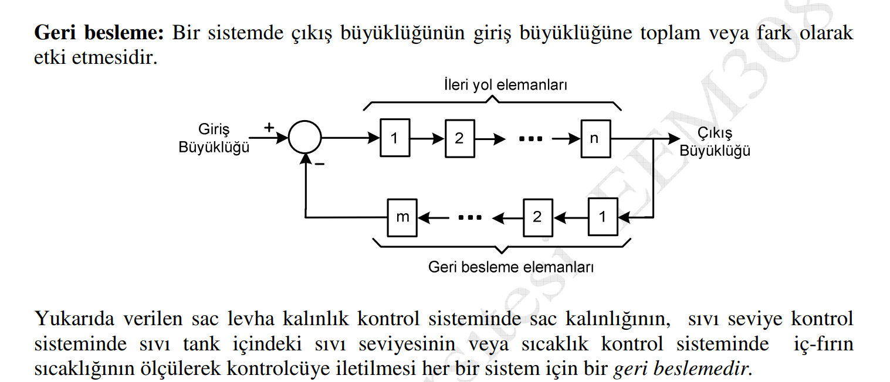
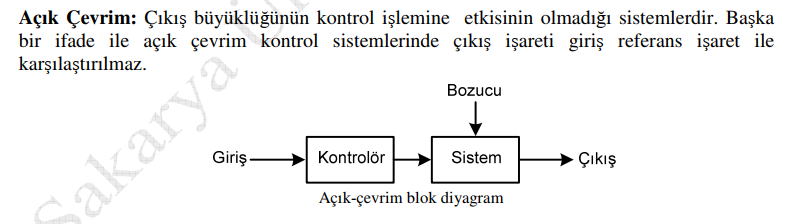
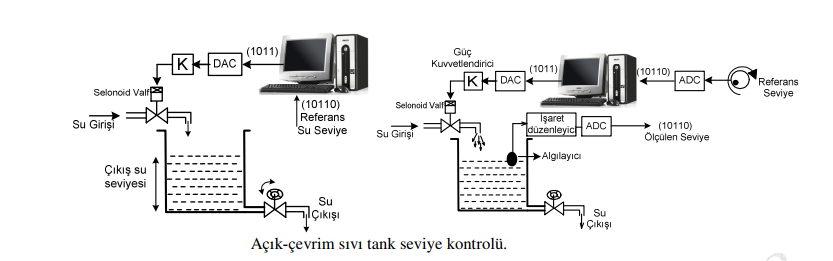
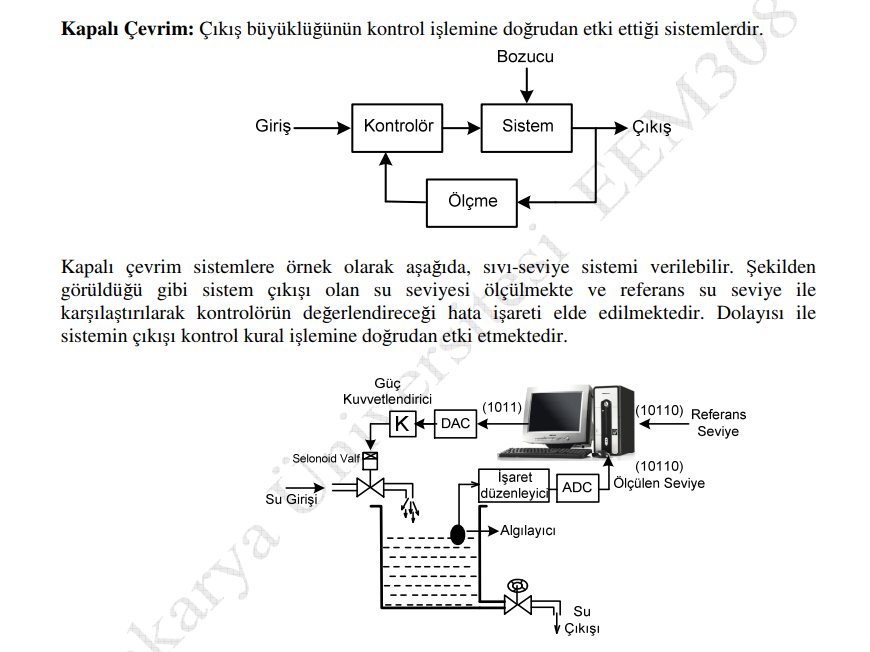
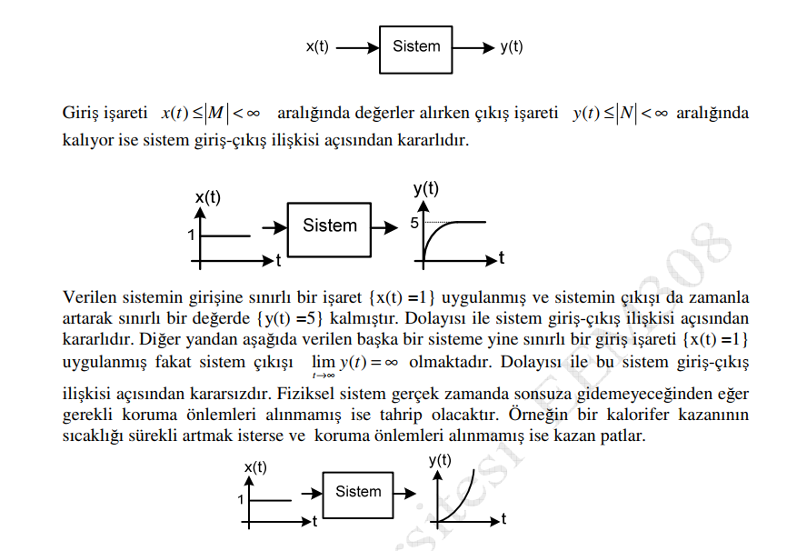
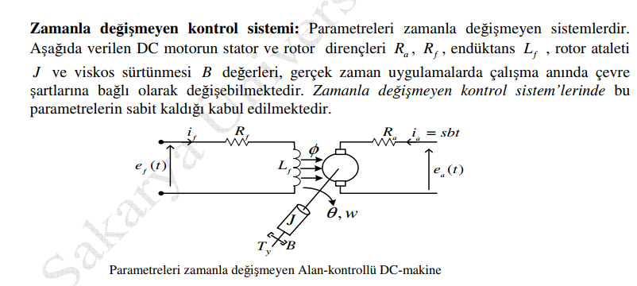
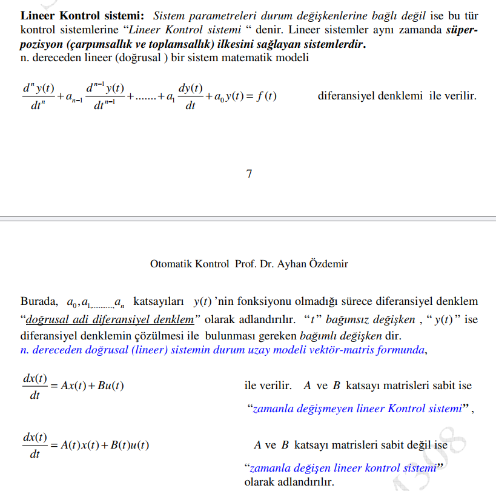
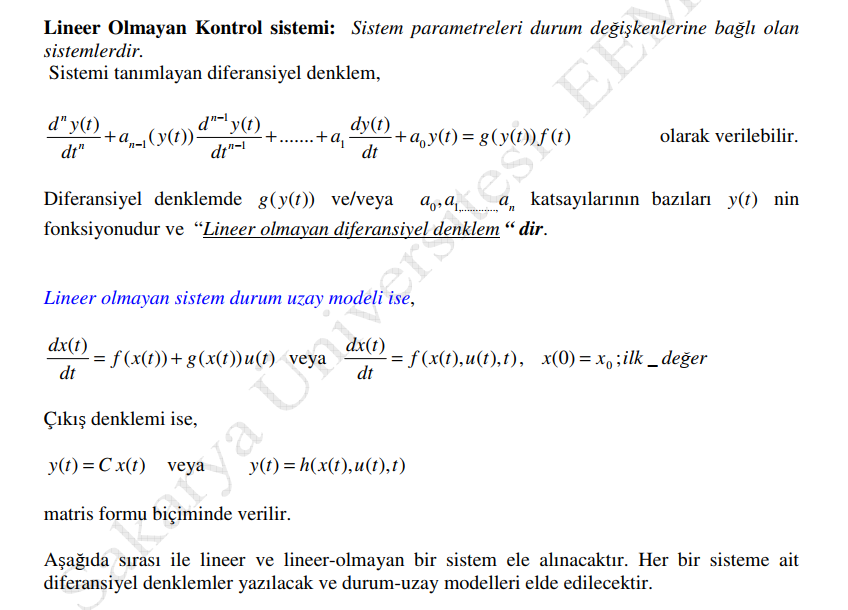
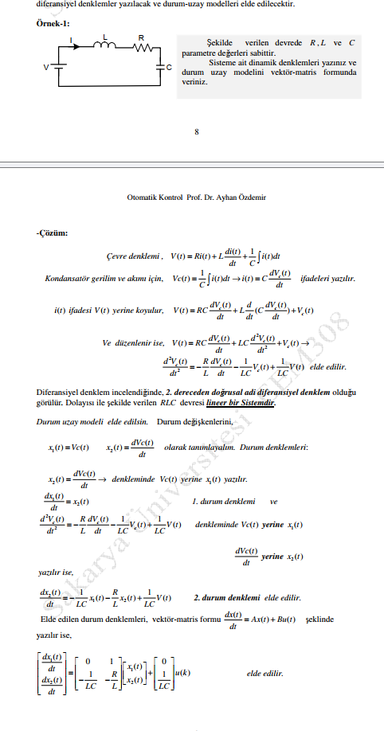
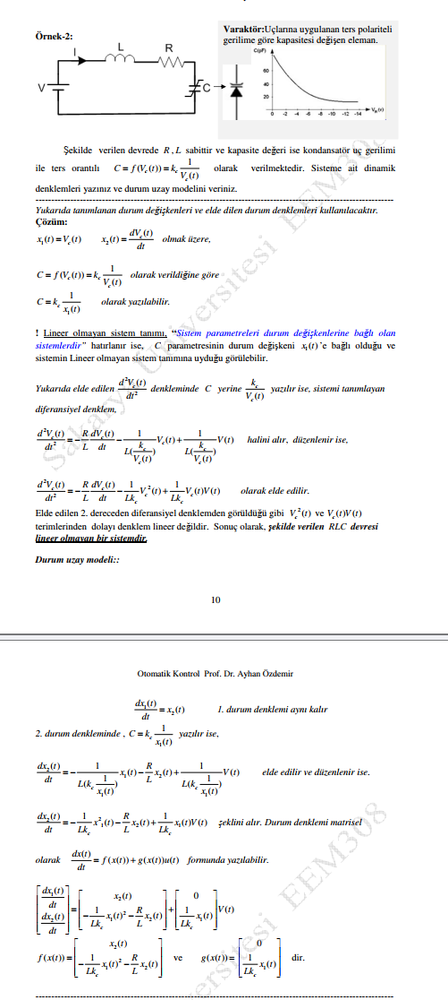

01Geri besleme

Kontrol, bir sistemde fiziksel büyüklüğün istenen referans değeri, belirlenen performansta takip etmesini sağlayan kurallar olarak tanımlanabilir.
Amaç, sıcaklık, basınç, hız veya seviye gibi bir büyüklüğü istenen değere getirmektir. Performans, hedefe ulaşma süresini, aşımı ve kalan hatayı kapsar.
Referans artı girişe, ölçülen çıkış eksi girişe gelir. Aralarındaki fark hata işaretidir.
ym(t): ölçülen geri besleme. Referans ve ölçüm, karşılaştırmada aynı ölçeğe getirilir.









